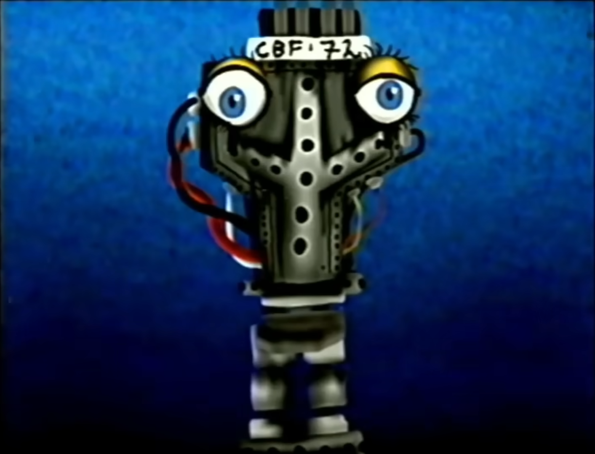
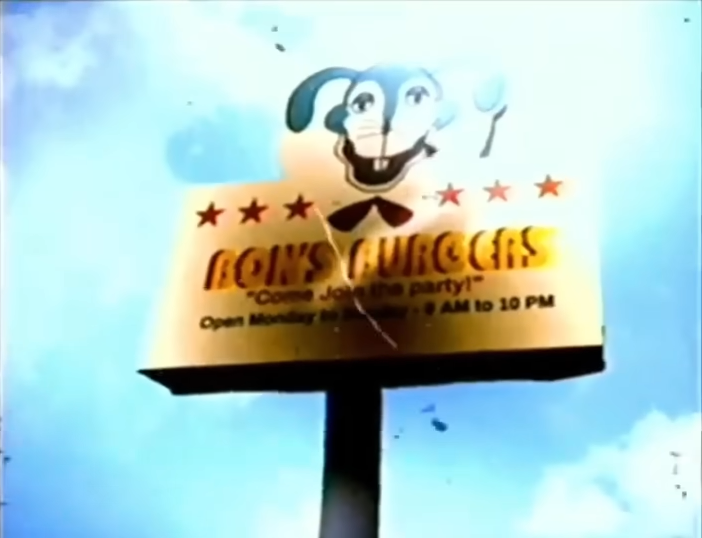
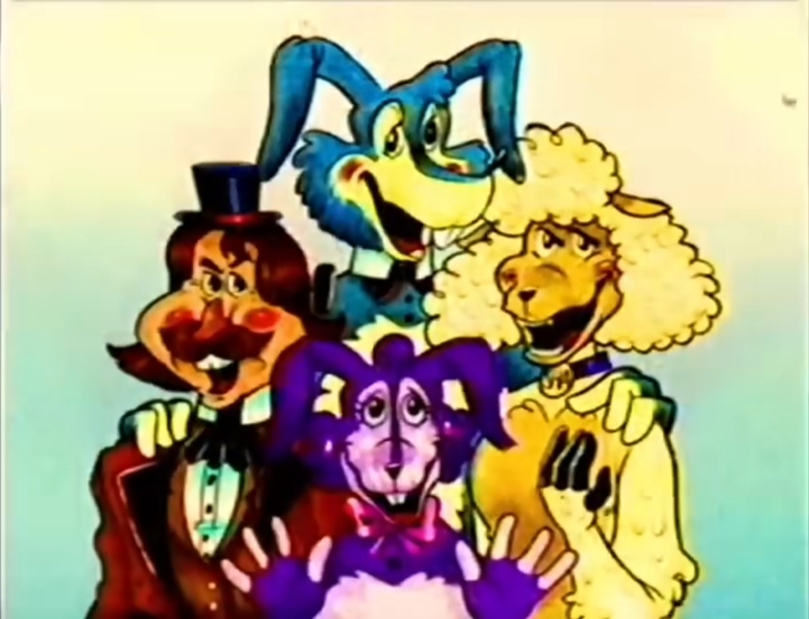
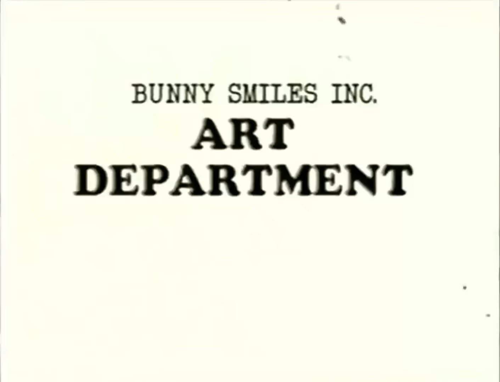
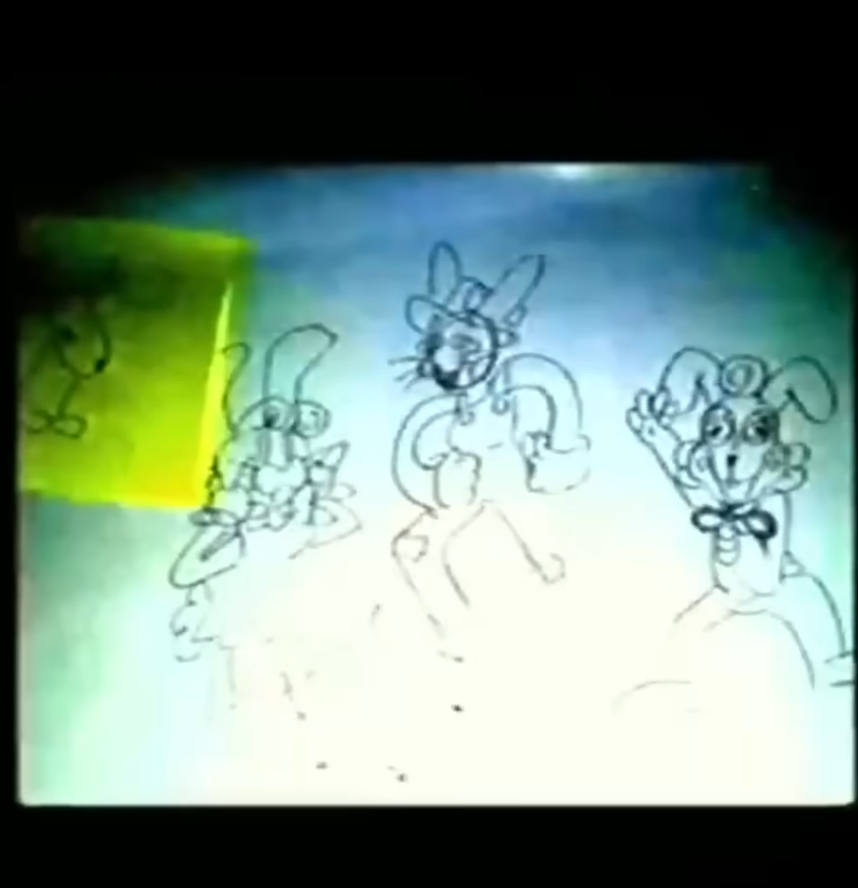
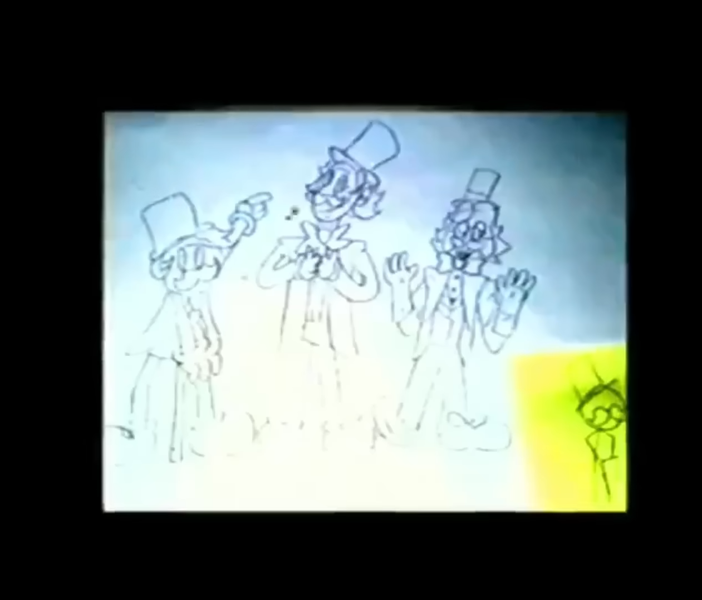
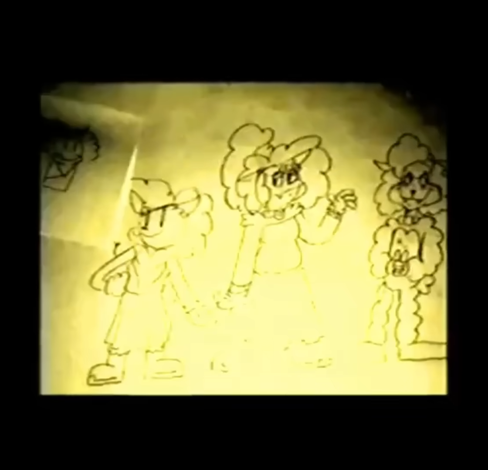
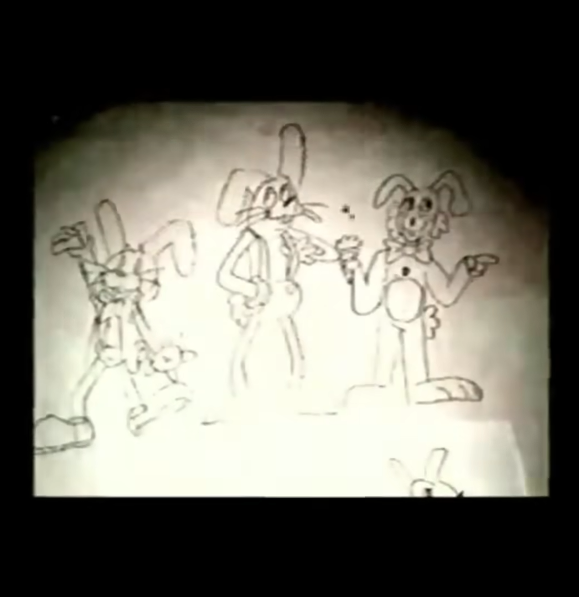
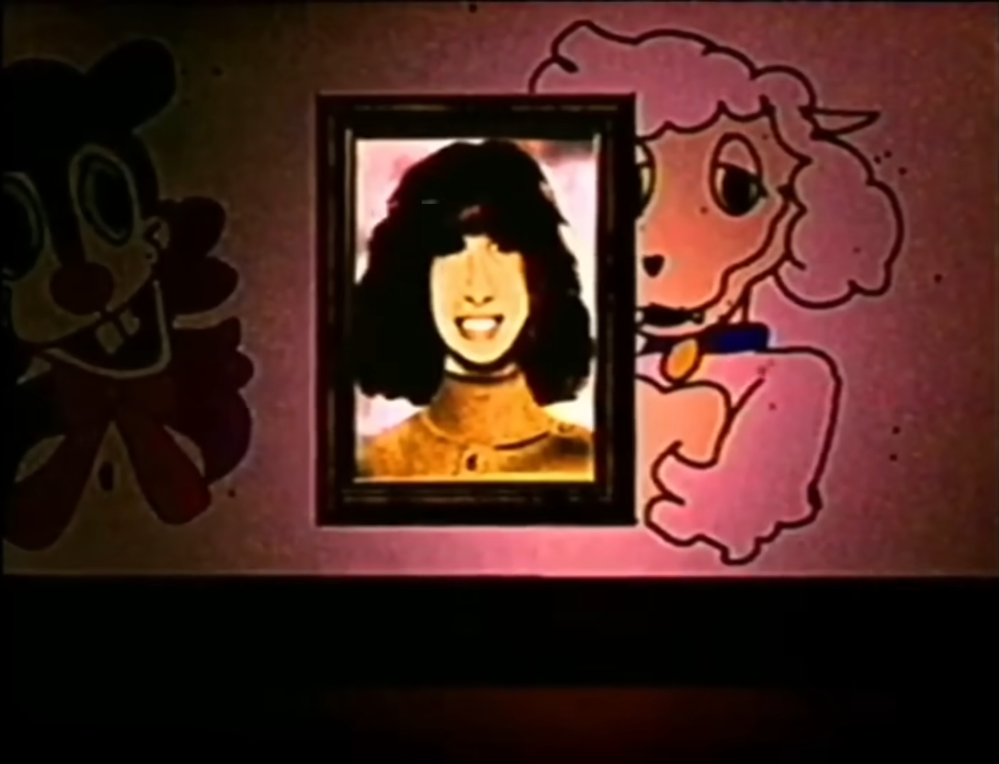

and how they were created!

CBF-72
Beautiful, isn't it?
this is one of the first mech models built by Cyberfun tech... to bring the magic of Bon's Burgers to life!
Today, we'll take a journey through the magic of the showstoppers and how they were created! you might learn a thing or two about the quality of our company.


these are the showstoppers! the face of Bunny Smiles Inc.
Concept Art is a very vital part of any good design! So many different ideas to pick from!





the Bunny Smiles Inc. art department was in charge of pitching multiple designs for the characters!
and creating the designs we all know and love!

Rosemary Walten, loving wife of Jack Walten, is a brilliant artist with a huge passion for poetry and the theatrical!
and has done numerous art pieces before becoming the lead artist in BSI. She's the one in charge of making the final designs that would later become the characters they are today!
Rosemary: i think i always had a pretty clear idea of how each character would look like. In my mind the designs just made sense to me. I wanted them to be appealing to younger audiences...while still being simple enough that they would be easy to remember.